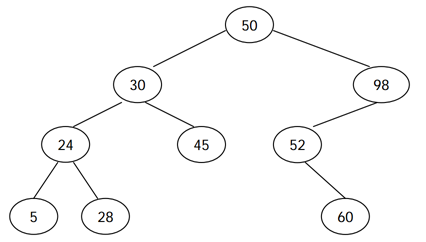

이진 검색 트리는 다음과 같은 세 가지 조건을 만족하는 이진 트리이다.

전위 순회 (루트-왼쪽-오른쪽)은 루트를 방문하고, 왼쪽 서브트리, 오른쪽 서브 트리를 순서대로 방문하면서 노드의 키를 출력한다. 후위 순회 (왼쪽-오른쪽-루트)는 왼쪽 서브트리, 오른쪽 서브트리, 루트 노드 순서대로 키를 출력한다. 예를 들어, 위의 이진 검색 트리의 전위 순회 결과는 50 30 24 5 28 45 98 52 60 이고, 후위 순회 결과는 5 28 24 45 30 60 52 98 50 이다.
이진 검색 트리를 전위 순회한 결과가 주어졌을 때, 이 트리를 후위 순회한 결과를 구하는 프로그램을 작성하시오.
트리를 전위 순회한 결과가 주어진다. 노드에 들어있는 키의 값은 106보다 작은 양의 정수이다. 모든 값은 한 줄에 하나씩 주어지며, 노드의 수는 10,000개 이하이다. 같은 키를 가지는 노드는 없다.
입력으로 주어진 이진 검색 트리를 후위 순회한 결과를 한 줄에 하나씩 출력한다.
Input:
50
30
24
5
28
45
98
52
60
Output:
5
28
24
45
30
60
52
98
50